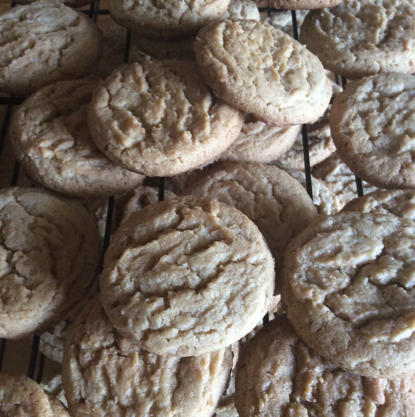

Classic Peanut Butter Cookies

Makes great cookies for the whole family
This recipe is for making classic peanut butter cookies in 15 minutes
Served to perfection immediately
Ingredients List
- One cup unsalted butter
- One cup crunchy peanut butter
- One cup white sugar
- One cup packed brown sugar
- 2 large eggs
- 2.5 cups flour
- 1 teaspoon baking powder
- 0.5 teaspoon salt
- 1.5 teaspoons baking soda
Recipe steps
- Cream butter, peanut butter, and sugars together in a bowl; beat in eggs
- In a separate bowl, sift flour, baking powder, baking soda, and salt; stir into butter mixture. Put dough in refrigerator for 1 hour
- Roll dough into 1 inch balls and put on baking sheets. Flatten each ball with a fork, making a crisscross pattern. Bake in a preheated 375 degrees F oven for about 10 minutes or until cookies begin to brown